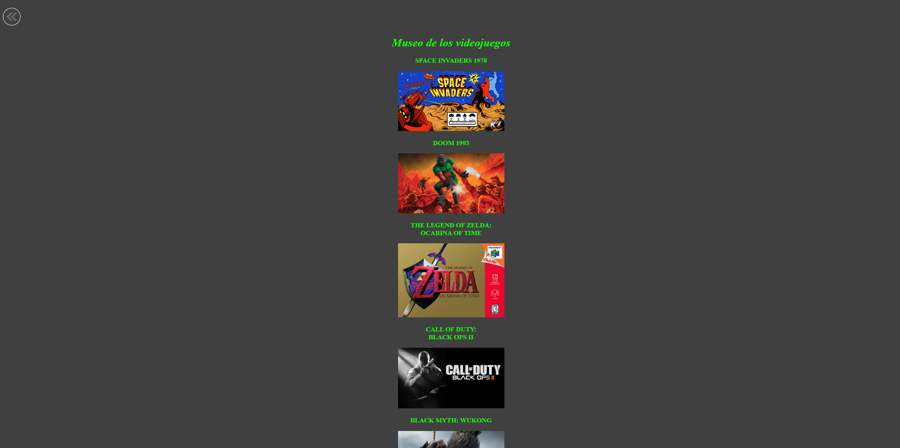
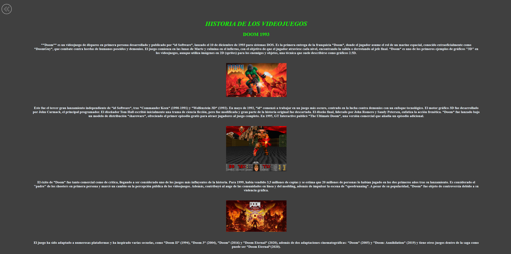
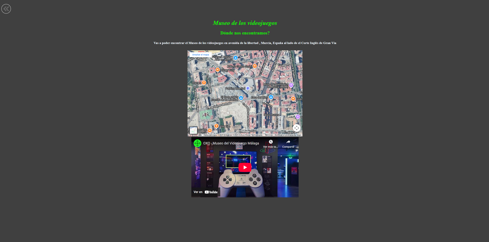

Página web del Museo de Videojuegos
Aplicación web
Descripción del proyecto
Este sitio web está dedicado al fascinante mundo de los videojuegos, un espacio en constante evolución donde la creatividad, la tecnología y la narrativa se unen para dar vida a experiencias únicas. Aquí se exploran desde los clásicos que marcaron generaciones hasta las últimas innovaciones que están definiendo el futuro del entretenimiento interactivo.
Además, el portal ofrece secciones dedicadas a géneros, estudios, sagas y tendencias actuales, junto con galerías, análisis y curiosidades del desarrollo de cada título. Es un punto de encuentro para quienes buscan comprender el impacto cultural y artístico de los videojuegos más allá del simple acto de jugar.
Galería de imágenes


